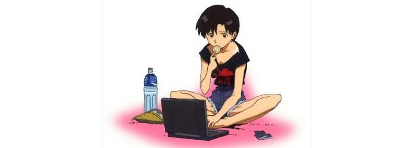

Chat
The one thing that has held our community together over the years is the IRC channel. The current IRC server is irc.blufudge.net, in channel #RPG. We also have a Mibbit client below. Remember that I do not moderate the chat and am not responsible for it. Also, Anastasia updates our IRC stats weekly on her personal site, which can be amusing to read.